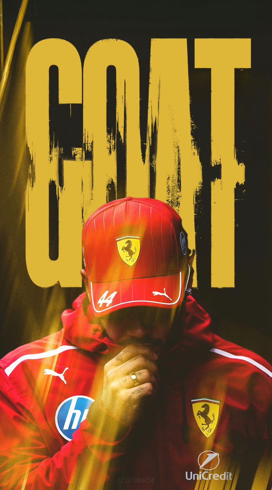
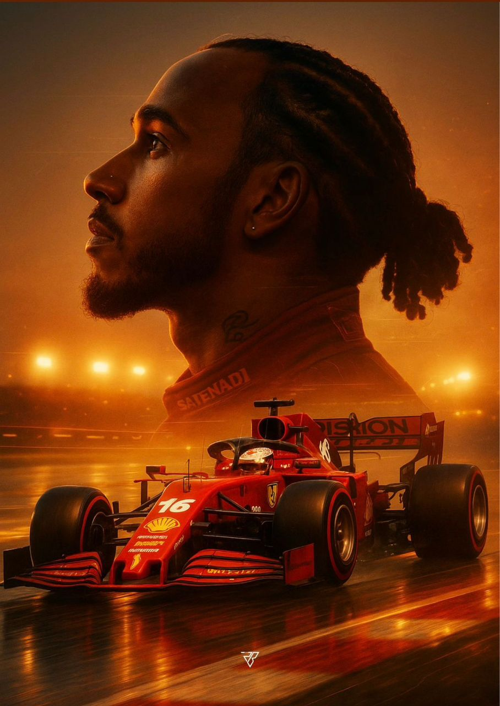

Légende · Formule 1 · N°44
Sept fois champion du monde — une légende vivante.
01 — Biographie
Lewis Hamilton, de son nom complet Lewis Carl Davidson Hamilton, est un pilote automobile britannique né le 7 janvier 1985 à Stevenage. Passionné de course dès son enfance, il commence le karting très jeune et se fait rapidement remarquer par l'écurie McLaren.
Il débute en Formule 1 en 2007 et devient champion du monde pour la première fois en 2008. En 2013, il rejoint Mercedes-AMG Petronas, avec laquelle il domine la discipline pendant plusieurs années, remportant sept titres de champion du monde.
En dehors de la piste, Hamilton est connu pour son engagement en faveur de l'égalité, de la diversité et de la protection de l'environnement. 🏎️
02 — Palmarès
Le palmarès de Lewis Hamilton est l'un des plus impressionnants de l'histoire de la Formule 1. Il remporte sept championnats du monde (2008, 2014, 2015, 2017, 2018, 2019 et 2020), égalant le record de Michael Schumacher.
Il détient également les records du plus grand nombre de victoires, de pole positions et de podiums. Après ses années chez Mercedes, il rejoint la légendaire Scuderia Ferrari pour un nouveau défi. 🏎️🔥
Lewis Hamilton est considéré comme le pilote qui a élargi l'audience de la Formule 1, en partie grâce à son activité sociale, son engagement pour la défense de l'environnement, ses incursions dans la musique et la mode. En 2020, il devient une figure majeure du mouvement Black Lives Matter, engageant toute la Formule 1 dans la lutte contre le racisme et pour augmenter la diversité dans le sport automobile.


Un champion, une légende, un nouveau défi : Ferrari.